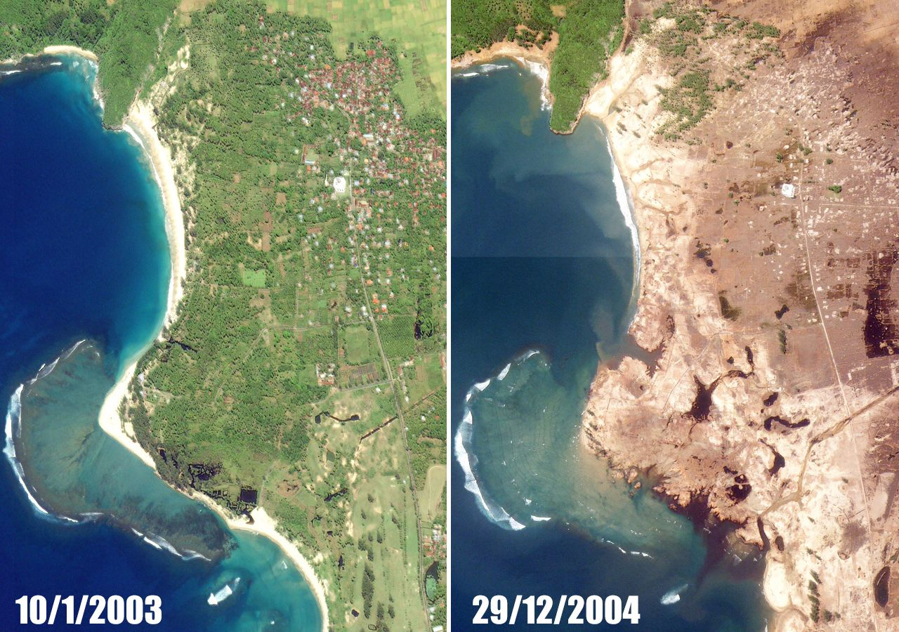

O TERRÍVEL TSUNAMI DE 2004 QUE ATINGIU A INDONÉSIA

No dia 26 de dezembro de 2004, um tremor de magnitude 9,1,
perto da costa noroeste da ilha de Sumatra,
gerou um tsunami que matou 230 mil pessoas em 14 países no Oceano Índico,
incluindo a Indonésia.
Confira o vídeo: